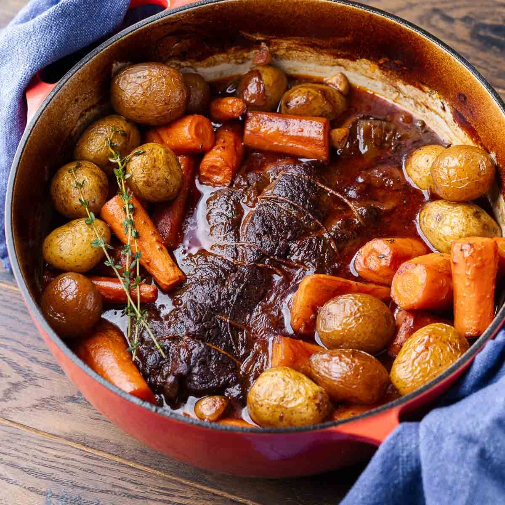

Big & Bodacious Pot Roast

Ingredients
- Beef chuck roast
- Salt and pepper
- Olive oil
- Onion
- Garlic
- Carrots
- Potatoes
- Beef broth (or red wine)
- Fresh thyme (or bay leaf)
Steps
- Preheat oven o 300°F (150°C).
- Season beef chuck roast with salt and pepper.
- Sear roast n a hot Dutch oven with oil until browned on all sides. Remove.
- Sauté aromatics: Cook chopped onions, garlic, and celery in the pot.
- Deglaze with broth or red wine, scraping the bottom.
- Add vegetables: Add vegetables:
- Return roast to pot. Add herbs like thyme and bay leaf.
- Cover and bake in oven for 3–4 hours, until fork-tender.
- Rest meat for 10 minutes, then slice and serve with veggies and gravy.
Return to HomePage